Dradis 3.1
A year of updates
By Daniel Martin / @etdsoft
Agenda
- The basics
- How does everything fit together
- New stuff
- Dradis packages
- Dradis from Git
You will ask questions now

And when you get stuck
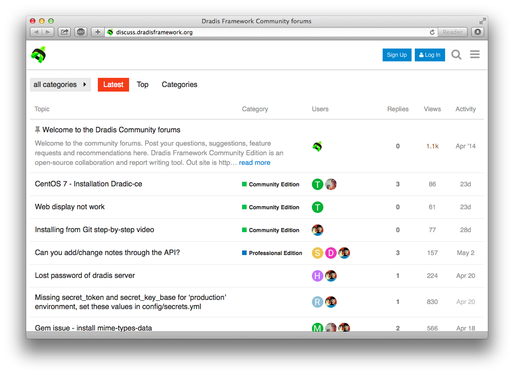
The basics
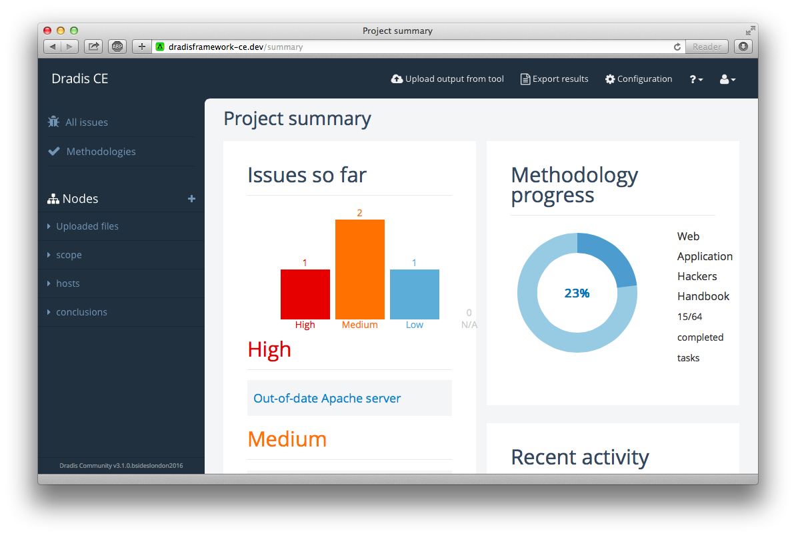Issues
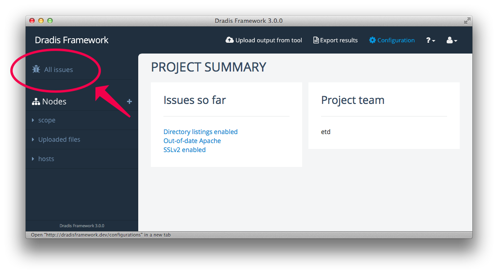Nodes
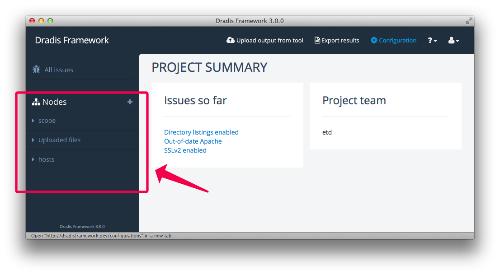Notes, Evidence, Attachments
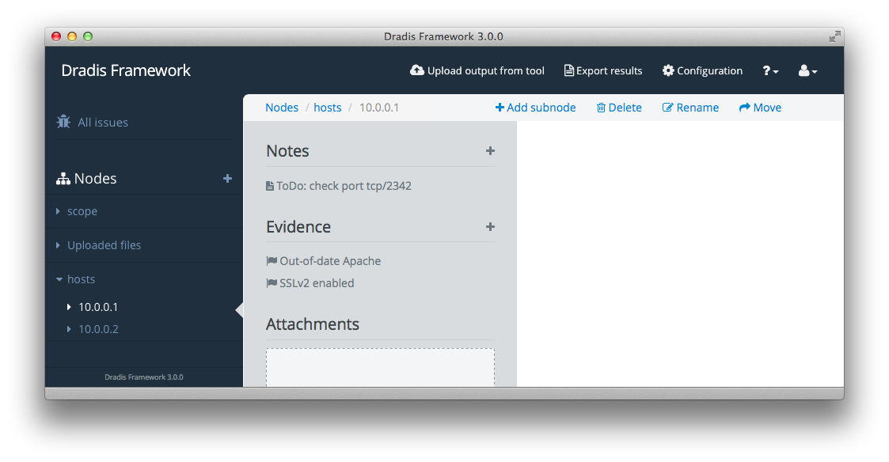How does everything
fit together
- The main app process
- The background worker
Quick stats
- 263 downloads / 137 clones per week
- dradis/dradis-ce vs dradis/dradis-legacy
- 350 commits in the last 12 months (305 in the last 6)
- 1 code base to rule them all
The code
Main app:
Connectors / add-ons
Ruby on Rails
version 4.2
Web interface:
Console interface:
irb> Issue.count
32
irb> Issue.first.title
"Out-of-date Apache"
Rails for hackers
- Rails Basics series by @cktricky
- Railscasts learn by watching
- RailsForZombies.org step-by-step videos
- Getting Started with Rails guide
- Try ruby learn by doing (non-Rails)
New and improved
in this release
Project summary
Tagging
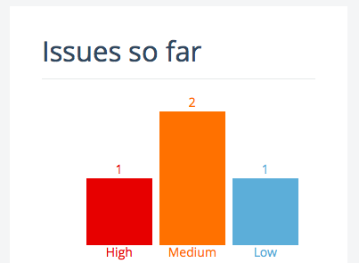["!d62728_high", "!ff7f0e_medium", "!6baed6_low"]Testing methodologies
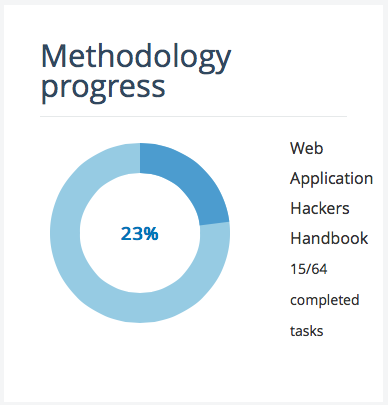Activity Feed
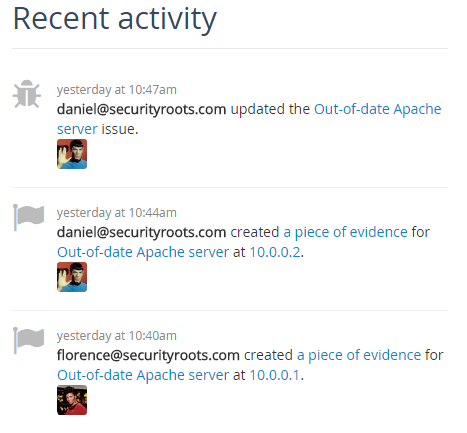Smart Issues table
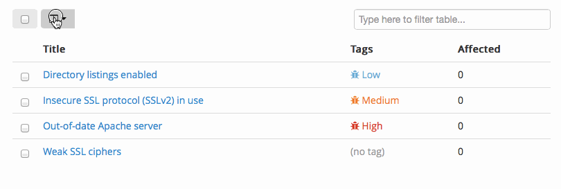Tabbed views
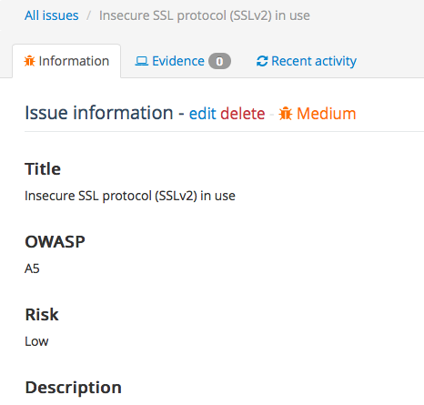Host properties
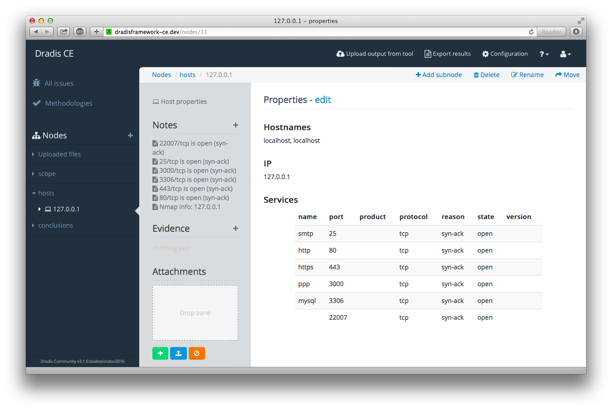REST API
/api/issues/api/nodes./evidence./notes
$ curl -i -u etd http://dradisframework-ce.dev/api/issues/4
{
"id": 4,
"title": "Out-of-date Apache server",
"fields": {
"Title": "Out-of-date Apache server",
"OWASP": "A9",
"Risk": "High",
"Description": "The version of ...",
"Solution": "The Apache HTTP ...",
"References": "Apache HTTP Server Project\nhttp://httpd.apache.org"
},
"text": "#[Title]#\nOut-of-date Apache server\n\n#[OWASP]#\nA9\n\n...",
"created_at": "2016-06-08T05:53:52.703Z",
"updated_at": "2016-06-08T05:53:52.703Z"
}
Dradis on Kali
- Non-Ruby prerequisites
- Package:
3.0.0~rc1(working on it) - You can still git
Non-Ruby prerequisites (1/2): Redis
Linux:
$ apt-get install redis-server
Mac:
$ brew install redis
$ redis-server /usr/local/etc/redis.conf
Non-Ruby prerequisites (2/2): SQlite3 libs
Linux:
$ apt-get install libsqlite3-dev
Mac:
$ brew install sqlite
Dradis packages
- Background worker for long-running tasks (Redis).
- Everything in one file.
What's inside the package?
- Ruby interpreter (2.2.2)
- Dradis Framework 3.1
- Ruby libraries and dependencies
- Download and run.
Remember both processes
$ ./dradis-webapp && ./dradis-worker
Dradis from Git
- For the latest and greatest.
- Platform independent(ish)
It's dangerous to go alone! Take this
Getting started
$ mkdir dradis3-git
$ cd dradis3-git/
$ git clone https://github.com/dradis/dradis-ce
$ cd dradis-ce/
Getting started
$ ruby ./bin/setup
$ bundle install
$ ruby ./bin/setup
- Cloning core Dradis add-ons
- Copying sample files (database.yml.template; Gemfile.plugins.template)
- Installing dependencies
- Preparing database
- Removing old logs and tempfiles
Running the process(es)
What we need:
- The Dradis app:
./bin/rails server - The Redis server.
- The background worker:
./bin/rake resque:work
Your turn
You will ask questions now